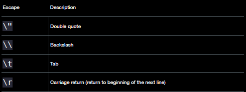
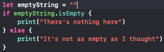
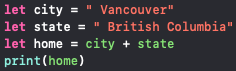
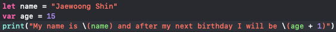
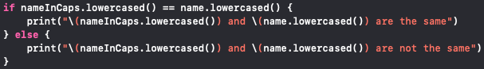
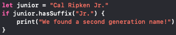
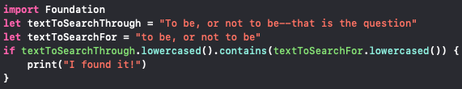
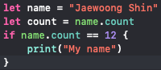

One of types that uses double quotation marks to represent a text
Escaping
types of Strings

Empty Strings
By using two double quotations with nothing between them creates a blank text

Characters
Using letters in the alphabet for creating constants can be used as characters
Concatenation
By creating constants and giving the values, you can combine them to create texts

Interpolation
With constants, you can combine different values to put them together and make new texts

Expressions
By using constants and , you can add constants with values within brackets to form a text
String Equality and Comparison
By using expressions == or != you can make constants that have different values the same, or different
Ignoring case
lowercased()
Used when ignoring the captilizations of string

hasPrefix(_:), hasSuffix(_:)
Used if you want to match the beginning or the end of the string

contains(_:)
Use this method to return a Boolean value that indicates whether or not

Checking length
If you are making an app with a password function, you can add ".count" after the constant to write if
statements to show if the password is short or not

Using switch
Using the code "default" makes the app print whatever string value written inside if the content does
not meet the condition above
Unicode
You can also add different languages other than English to your string value and emojis as well